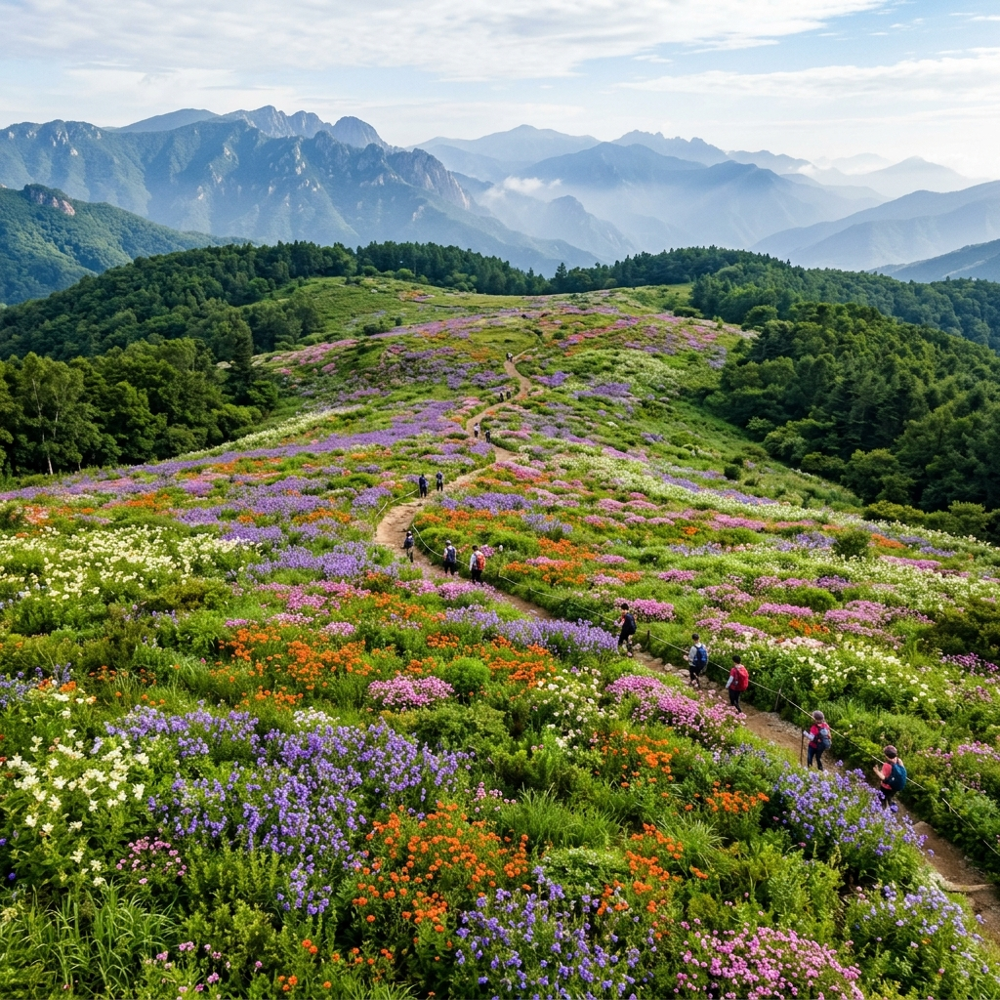
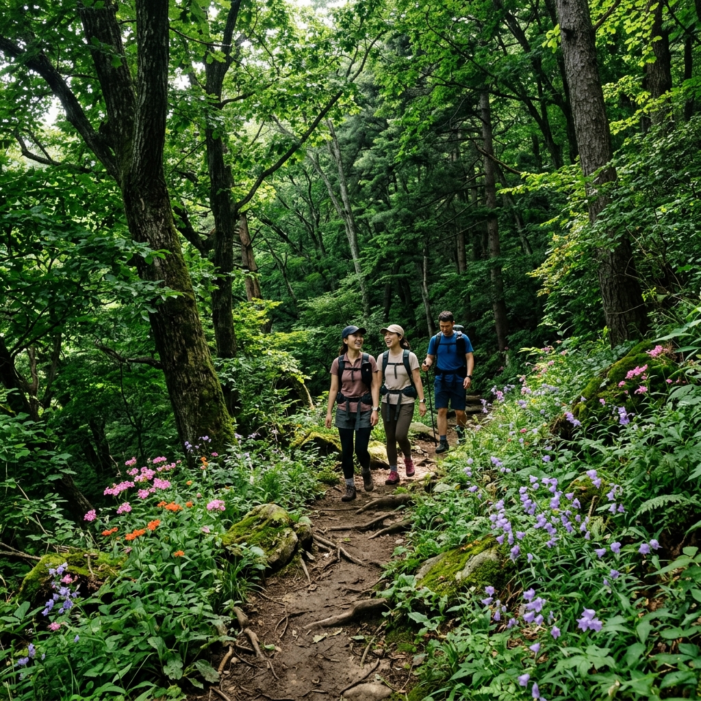
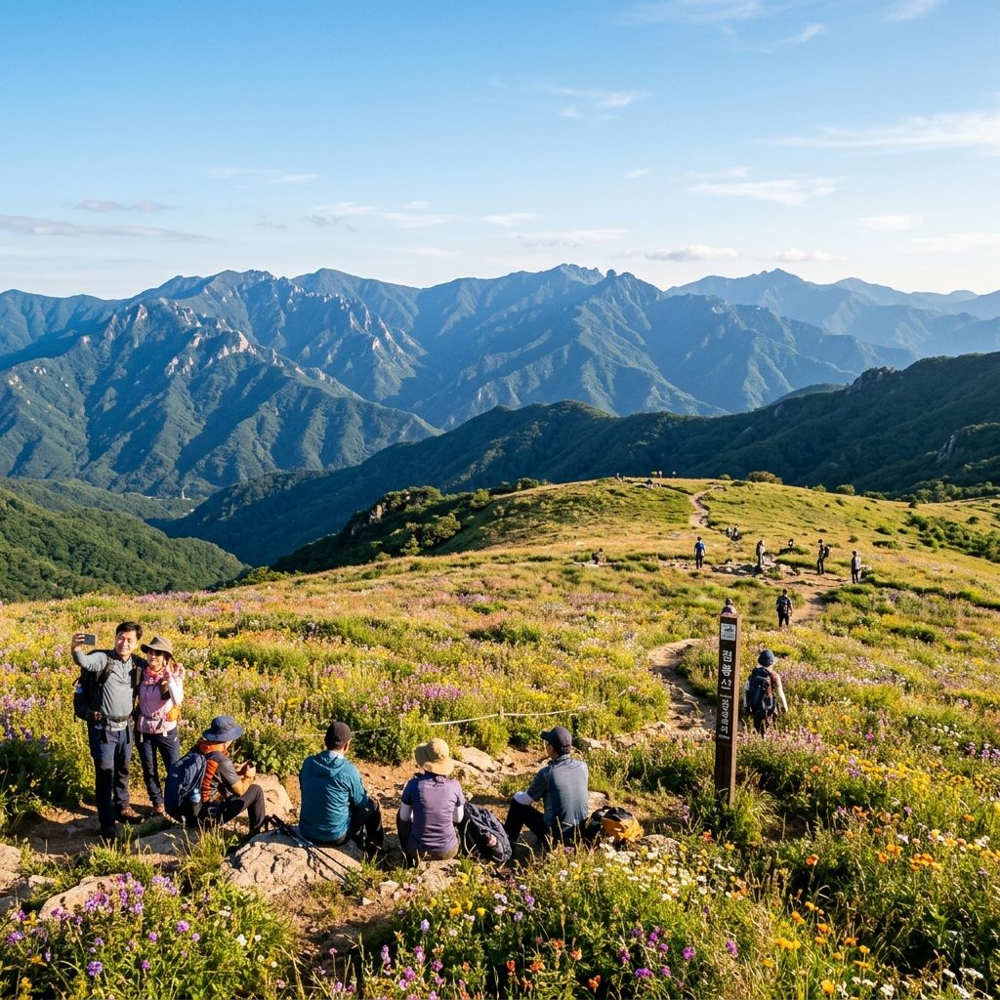

점봉산 곰배령 7월에 다녀왔더니 — 예약 경쟁부터 야생화까지 솔직 후기
솔직히 말하면 처음에는 반신반의했습니다.
인터넷에 '곰배령 야생화'를 검색하면 사진은 넘치는데, "예약이 너무 어렵다", "취소표 노려야 한다"는 후기가 가득해서 과연 내가 갈 수 있을까 싶었거든요.
그래서 직접 숲나들e 예약 사이트에 들어가서 경쟁 과정을 경험해 봤습니다. 예약 오픈 시각인 수요일 오전 9시에 손가락을 대기하고 새로고침을 반복하는 그 경험, 그 결과로 올라간 곰배령에서 본 풍경까지 오늘 솔직하게 나눠보겠습니다.

점봉산 곰배령 고산 초원의 7월 야생화 군락 / AI 제작 이미지
곰배령이 뭔데 이렇게 난리일까
강원도 인제군 점봉산(해발 1,424m) 능선에 있는 곰배령은 고산 초원 생태 보전 구역입니다.
정식 명칭은 '점봉산 생태경관보전지역'이며, 하루에 입장 가능한 인원이 450명으로 제한되어 있습니다. 국립공원이 아니라 환경부 지정 생태경관보전지역이어서 일반 등산처럼 아무 때나 오를 수 없고, 반드시 사전 예약이 필요합니다.
왜 이렇게 인기가 많냐고요? 등산 실력이 없어도 갈 수 있는 고산 야생화 명소이기 때문입니다. 총 10.4km 코스지만 경사가 완만해 초보 등산객도 왕복 5~7시간이면 충분합니다. 정상부에 펼쳐지는 넓은 초원에서 동자꽃, 금강초롱꽃, 노루오줌 등 수십 종의 야생화가 피어나는 모습은 사진으로 봐도 탄성이 나옵니다.
특히 7월은 야생화가 절정에 달하는 시기입니다. 6월 말부터 8월 초 사이가 가장 화려하고, 그중에서도 7월 초중순이 색깔이 가장 다양한 시기라고 현지 탐방 안내원이 알려줬습니다.
예약 전쟁, 실제로 얼마나 치열한가
✍️ 직접 경험해보니
수요일 오전 8시 50분, 숲나들e(foresttrip.go.kr) 사이트에 미리 로그인해 두고 대기했습니다. 9시 정각에 새로고침을 눌렀는데 — 이미 인기 시간대 슬롯(오전 9시 30분 입산)은 60초도 안 돼서 마감됐습니다.
다행히 오전 11시 입산 슬롯이 남아 있어서 거기에 신청할 수 있었습니다. 1인당 1예약이 원칙이고 그룹은 대표 1인이 전체를 신청하는 방식이었습니다. 신청 후 문자로 예약 확인이 왔고, 실제 탐방일에는 신분증을 가져가야 한다는 안내가 함께 왔습니다.
예약 방법을 정리하면 이렇습니다. 숲나들e 홈페이지(foresttrip.go.kr)에서 회원가입 후 로그인, 매주 수요일 오전 9시에 2주 뒤 주말 및 공휴일 예약이 열립니다. 평일은 1~2주 전에도 남아있는 경우가 있지만, 주말은 오픈 직후 수십 분 내에 마감되는 것이 일반적입니다.
입산 시간은 오전 9시부터 11시 사이에 시작해야 하며, 신분증 지참이 의무입니다. 신분증이 없으면 입장 자체가 안 되니 반드시 챙기세요.
취소표를 노리는 방법도 있습니다. 예약 취소가 발생하면 실시간으로 자리가 다시 열리기 때문에, 탐방 며칠 전까지 수시로 확인해보는 것이 효과적입니다. 평일 이른 오전 시간대는 상대적으로 취소표가 남는 경우가 많습니다.
서울·수도권에서 어떻게 가나
인제 곰배령은 대중교통으로 가기가 쉽지 않습니다. 서울에서 인제 버스터미널까지는 동서울터미널에서 약 2시간 30분이 소요되고, 인제 터미널에서 진동리(탐방 출발지)까지는 다시 버스가 거의 없습니다. 사실상 자가용 또는 렌터카를 이용하는 것이 현실적입니다.
서울에서 자가용 기준으로 진동리 탐방로 시작점까지 약 2시간 40분~3시간(일반적인 평일 기준, 주말 교통 상황에 따라 차이 있음)이 걸립니다.
내비게이션으로는 '인제 곰배령 탐방지원센터' 또는 '강원 인제군 기린면 진동리'를 목적지로 설정하면 됩니다. 주차는 탐방로 입구 인근 임시 주차장을 이용하며 무료입니다.

곰배령 등산로 구간의 동자꽃과 노루오줌 군락 / AI 제작 이미지
탐방 코스와 7월에 볼 수 있는 야생화
탐방로는 진동리 주차장에서 출발해 곰배령 정상 초원까지 편도 5.2km입니다. 왕복 10.4km이고 총 소요 시간은 보통 5~7시간입니다. 올라가면서 숲속 계곡을 따라 걷는 구간이 많아 더운 여름에도 시원한 편입니다.
7월에 볼 수 있는 주요 야생화:
- 동자꽃: 주홍색 꽃잎이 선명하여 멀리서도 눈에 띕니다. 7월 초중순이 절정.
- 금강초롱꽃: 보라색 종 모양 꽃. 곰배령을 대표하는 꽃으로 7월 중순~8월 초.
- 노루오줌: 분홍색 작은 꽃이 모여 피는 군락이 코스 전반에 걸쳐 볼 수 있습니다.
- 터리풀: 흰색 깃털 같은 꽃송이가 인상적. 7월 내내 볼 수 있습니다.
- 범꼬리: 보라색 수상화서로 초원에서 군락을 이룹니다.
솔직히 말하는 단점과 아쉬운 점
좋은 점만 이야기하는 것은 공정하지 않습니다. 실제 다녀오면서 불편했던 점들을 솔직하게 전합니다.
주요 단점:
첫째, 예약이 정말 어렵습니다. 수요일 9시 알람을 설정하고도 주말 오전 시간대는 확보가 어렵습니다. 평일 오전 시간에 여유로운 분들이 아니라면 상당한 노력이 필요합니다.
둘째, 편의시설이 거의 없습니다. 탐방 출발지인 진동리 일대에 매점이나 카페가 없습니다. 식사와 간식을 모두 직접 챙겨가야 합니다. 편의점도 인제 시내까지 나가야 있습니다.
셋째, 이른 새벽 이동이 필요합니다. 서울에서 오전 9시 입산을 하려면 오전 5시 반~6시에는 출발해야 합니다. 늦잠을 좋아하는 분께는 쉽지 않은 여행입니다.
넷째, 당일 날씨 변수가 큽니다. 산악 지역이라 맑은 날 예약을 해도 당일 비가 내리는 경우가 있습니다. 비 오는 날 곰배령은 시야가 좁고 야생화 감상이 어렵습니다.
챙겨야 할 준비물
탐방 특성상 챙겨야 할 것들이 있습니다.
• 필수: 신분증, 예약 확인 문자(또는 앱), 등산화(운동화도 가능하나 등산화 권장), 충분한 물(1인 1.5L 이상), 점심 도시락 또는 간식
• 권장: 긴팔 상의(정상부 바람이 강함), 우의(갑작스러운 소나기 대비), 스틱(하산 시 무릎 보호), 선크림, 모자
• 야생화 감상 팁: 줌 렌즈가 있는 카메라 또는 스마트폰 망원 기능 활용. 야생화는 훼손 금지이므로 손으로 건드리거나 꺾지 마세요.
인근 연계 여행지 — 하루 더 있다면
당일 여행도 가능하지만 1박을 추가하면 인근 명소를 함께 볼 수 있습니다.
내린천: 인제군을 대표하는 계곡으로, 여름 래프팅 명소입니다. 탐방 당일 오후에 들러볼 만합니다.
방동약수: 인제 기린면에 있는 천연 탄산 약수터입니다. 특유의 쇠맛이 나는 약수로 지역 명물입니다.
합강정: 북한강과 소양강이 합류하는 지점에 위치한 정자로 조망이 좋습니다. 인제 시내 인근이라 접근이 쉽습니다.

곰배령 정상 전망대에서 바라본 점봉산 능선 / AI 제작 이미지
방문 전 체크리스트
- 숲나들e 예약 완료 + 확인 문자 수신 ✅
- 신분증 챙기기 ✅
- 출발 전날 날씨 확인 (우의 또는 일정 변경 고려) ✅
- 점심 도시락 준비 (현지 매점 없음) ✅
- 스마트폰 배터리 충전 완료 (보조배터리 권장) ✅
- 등산화 또는 발목 지지 가능한 운동화 착용 ✅
📝 작성자 메모
저는 수요일 9시 오픈 공략으로 세 번 만에 겨우 예약에 성공했습니다. 처음 두 번은 주말 오전 자리를 노리다 실패하고, 세 번째에 평일 오전으로 방향을 바꾸니 바로 됐습니다.
정상부 초원에서 바라본 야생화는 사진과 다르게 실제로 보면 훨씬 넓고 풍성합니다. 고산 초원이라는 환경 자체가 주는 개방감이 크고, 7월의 꽃들이 한꺼번에 피어 있어 어느 방향을 봐도 색이 가득합니다.
예약 경쟁이 어렵지만 그만큼 사람이 적어 조용하게 즐길 수 있는 곳이기도 합니다. 올여름 도전해 보시기 바랍니다.
#곰배령
#점봉산야생화
#인제여행
#숲나들e예약
#강원도여름
#7월여행
#동자꽃
#금강초롱꽃
#국내등산추천
#생태경관보전지역